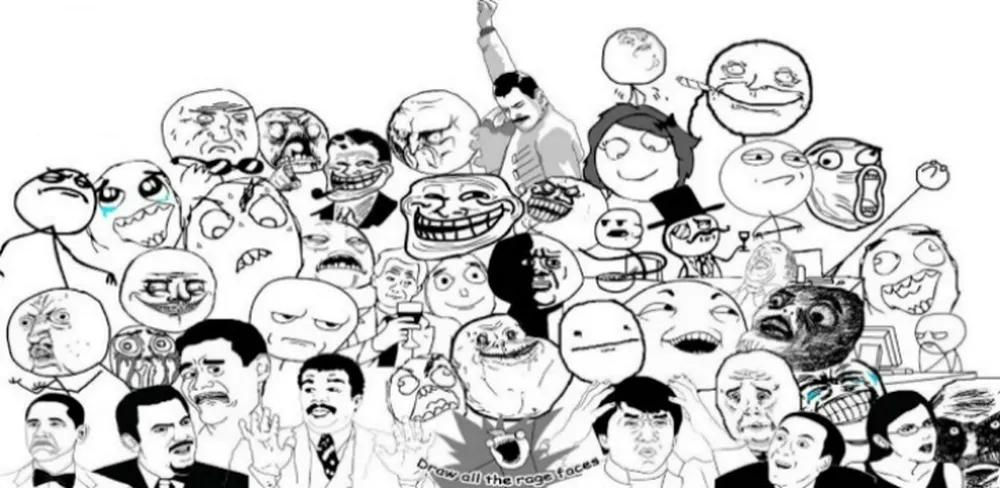
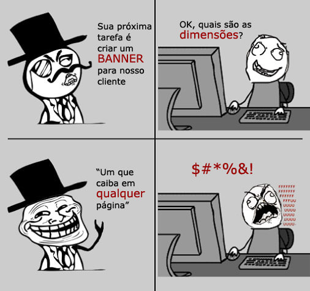
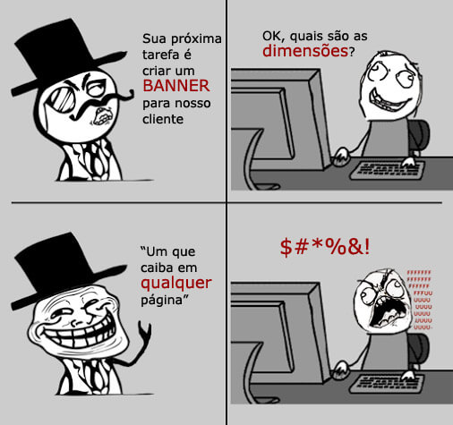

MEMES, jeito engraçado de criar laços com determinados grupos sociais
Memes em geral são uma otima maneira de criar laços de amizade ou mesmo encontrar pessoas que tenham os mesmos
gostos peculiares que você, pois bem, memes de uma maneira diferente são inclusivos para a maioria de grupos
socias, sejam eles certos ou errados ao ponto de vista da sociedade, os memes vieram justamente para
isso, quebrar o cliche e ser tão engraçado quanto qualquer piada besta que já tenha escutado, em geral
acredita-se que esse tipo de imagem ou video, criados no intuito de nós deixar feliz, alegres
Origem dos Memes
O primeiro meme a ser utilizado na internet foi provavelmente criado em 1998, por Joshua Schachter, que na
época tinha 24 anos e trabalhava no serviço de weblog chamado Memepool, onde vários usuários podiam postar links
interessantes e compartilhar com as outras pessoas.

Tipos de Memes
Frases, comumente acompanhada de figuras: São informações com tom jocoso e trocadilhos
Desenhos, geralmente em P&B: São imagens com traços caricatos ou fotos adaptadas a desenhos.

 
